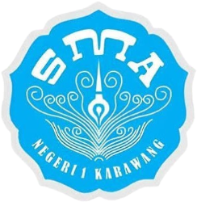
SEKOLAH MENENGAH PERTAMA
SMA Negeri 1 Karawang
MIPA
Mempelajari ilmu sains dasar dan logika melalui empat bidang utama, yaitu matematika, fisika, kimia, dan biologi.
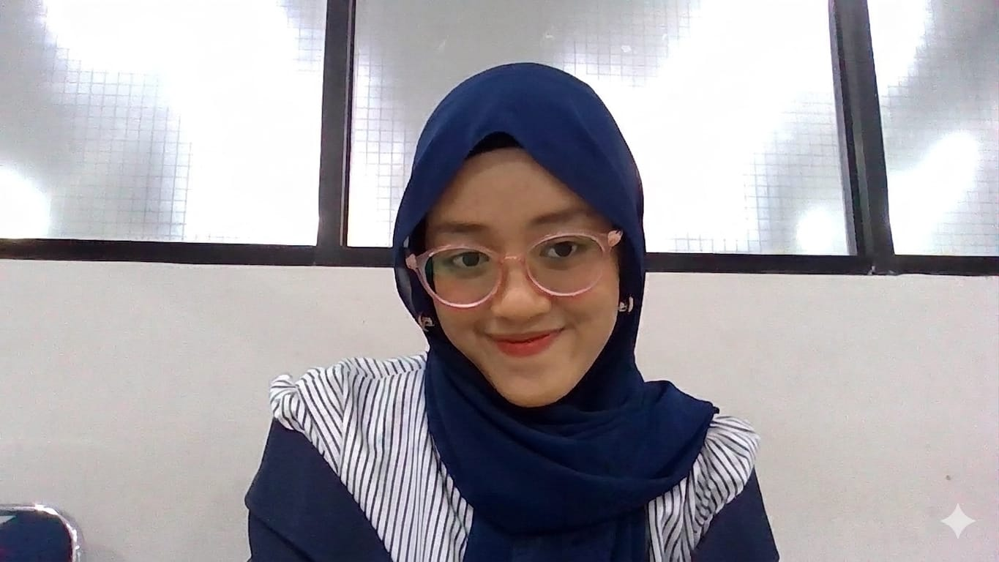
Mahasiswa Jurusan Sistem Informasi di Budi Luhur University yang tertarik pada pengembangan web, desain UI/UX, dan pemanfaatan teknologi untuk menciptakan solusi digital yang bermanfaat.
— PENDIDIKAN
Perjalanan pendidikan yang membentuk fondasi pengetahuan dan keterampilan saya.

MIPA
Mempelajari ilmu sains dasar dan logika melalui empat bidang utama, yaitu matematika, fisika, kimia, dan biologi.
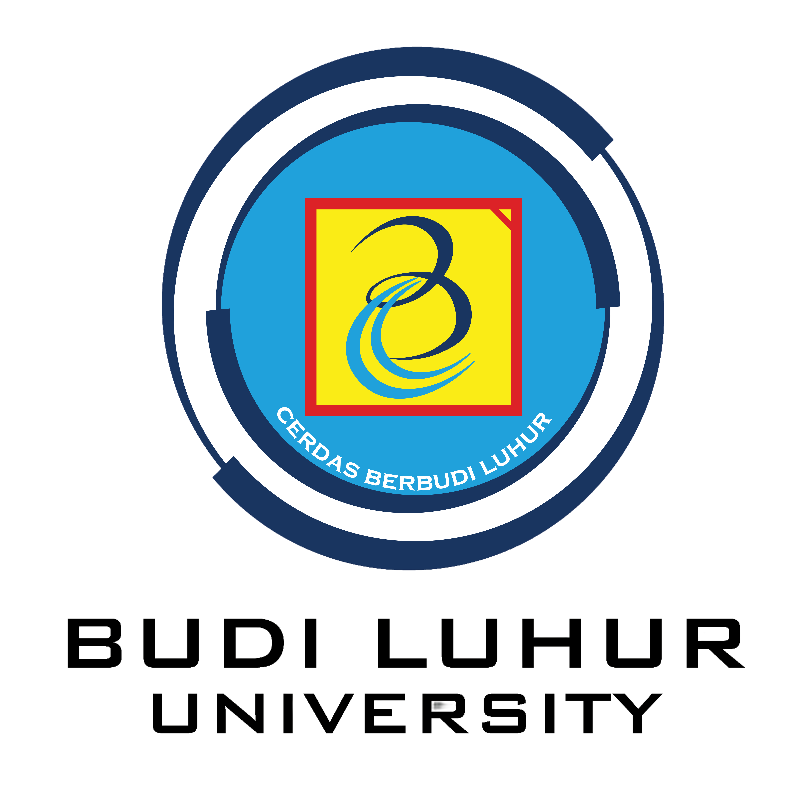
S1 Sistem Informasi
Mempelajari sistem informasi, pengembangan aplikasi, basis data, analisis proses bisnis, dan pengalaman pengguna.
— PENGALAMAN & ORGANISASI
Pengalaman organisasi, kepanitiaan, dan kontribusi yang menjadi bagian dari perjalanan saya.
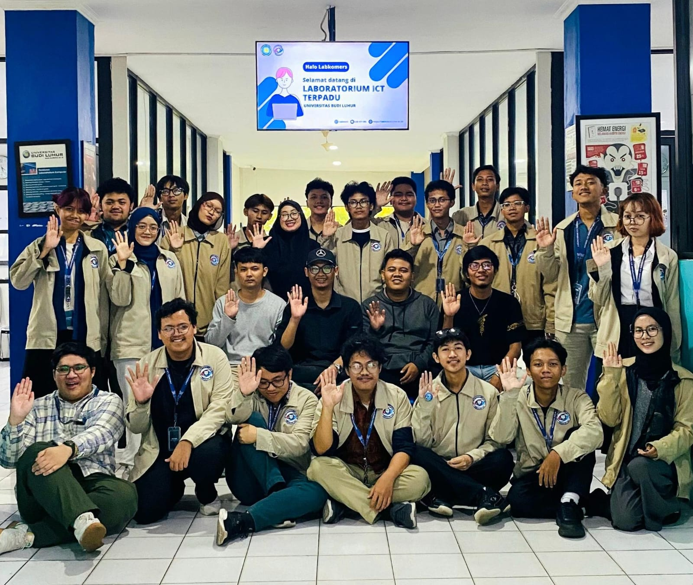
Asisten Laboratorium · 2025-2026
Mengelola operasional dan perawatan infrastruktur IT laboratorium, membantu praktikum dan asistensi, serta berkontribusi dalam program kerja labkom.
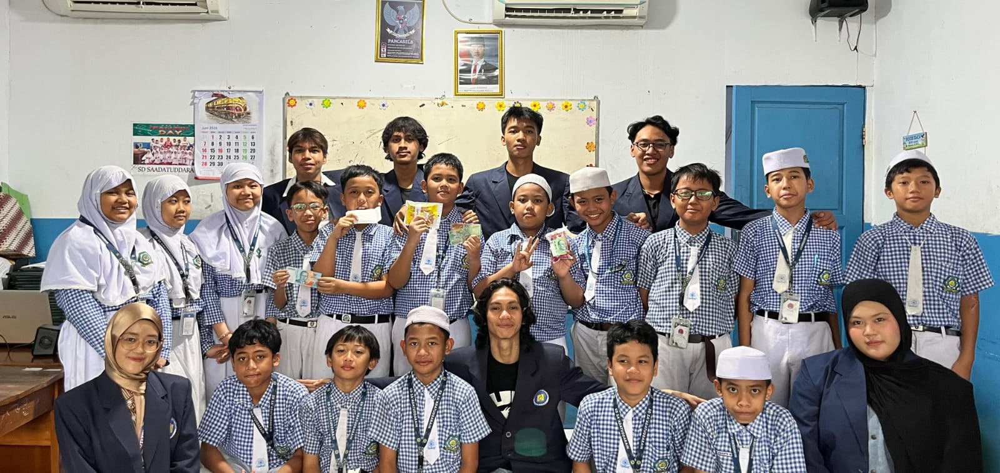
Pemateri · 2026
Edukasi interaktif berbasis gamifikasi yang mengajak siswa sekolah dasar belajar memilah dan memanfaatkan sampah sejak dini melalui aktivitas yang menyenangkan dan edukatif.
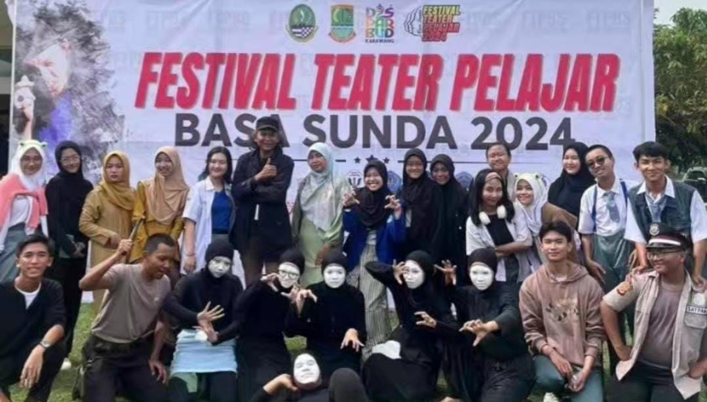
Wakil Ketua · 2023-2025
Ekstrakurikuler teater yang mengembangkan kemampuan akting, komunikasi, dan kolaborasi melalui pertunjukan teater dan kegiatan seni.
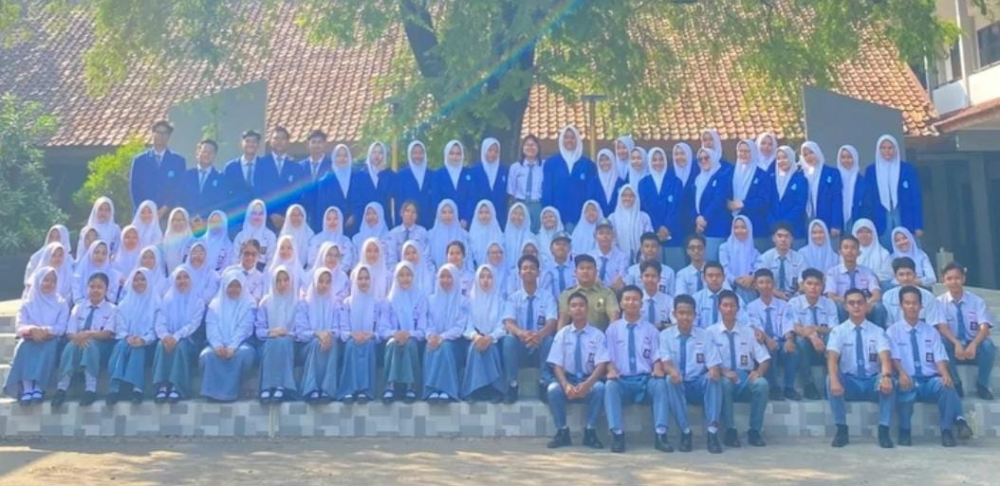
Divisi Prestasi dan Kreativitas Seni · 2023-2024
Mengelola kegiatan dan program kerja OSIS, serta berkontribusi dalam pengembangan kreativitas seni maupun prestasi di lingkungan sekolah.
— KEAHLIAN
Teknologi dan tools yang saya gunakan dalam proses belajar dan pengembangan proyek.
— PROYEK PILIHAN
Kumpulan proyek, eksperimen, dan solusi digital yang saya kembangkan selama proses belajar.
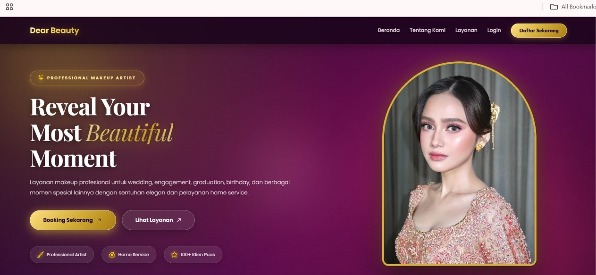
01Aplikasi pemesanan jasa makeup artist dengan fitur booking, pengelolaan pesanan, dan informasi layanan.
Lihat ProyekMengonfigurasi jaringan dasar hingga menengah menggunakan MikroTik RouterBoards, subnetting, dan integrasi layanan jaringan berbasis Linux seperti web server (Nginx), domain sistem (DNS), transfer file (FTP), SSH, dan database.
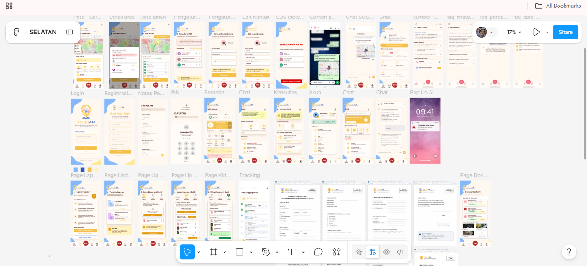
03Konsep platform pembelajaran berbasis permainan dan AI untuk membantu meningkatkan literasi anak.
— SERTIFIKASI
Kumpulan sertifikasi, pelatihan, dan pencapaian dalam perjalanan akademik dan profesional saya.
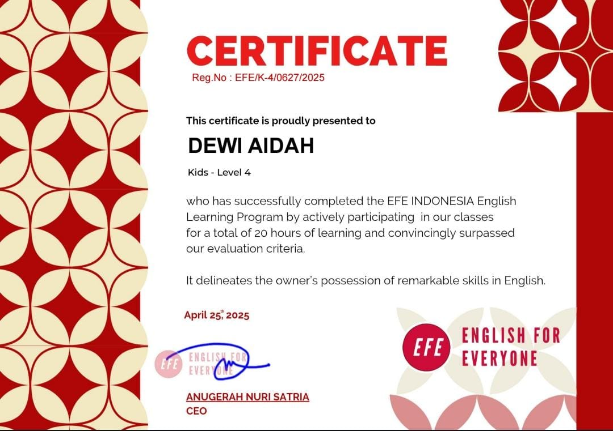
English For Everyone · April 2025
Online Course untuk meningkatkan kemampuan bahasa Inggris tingkat menengah-atas.
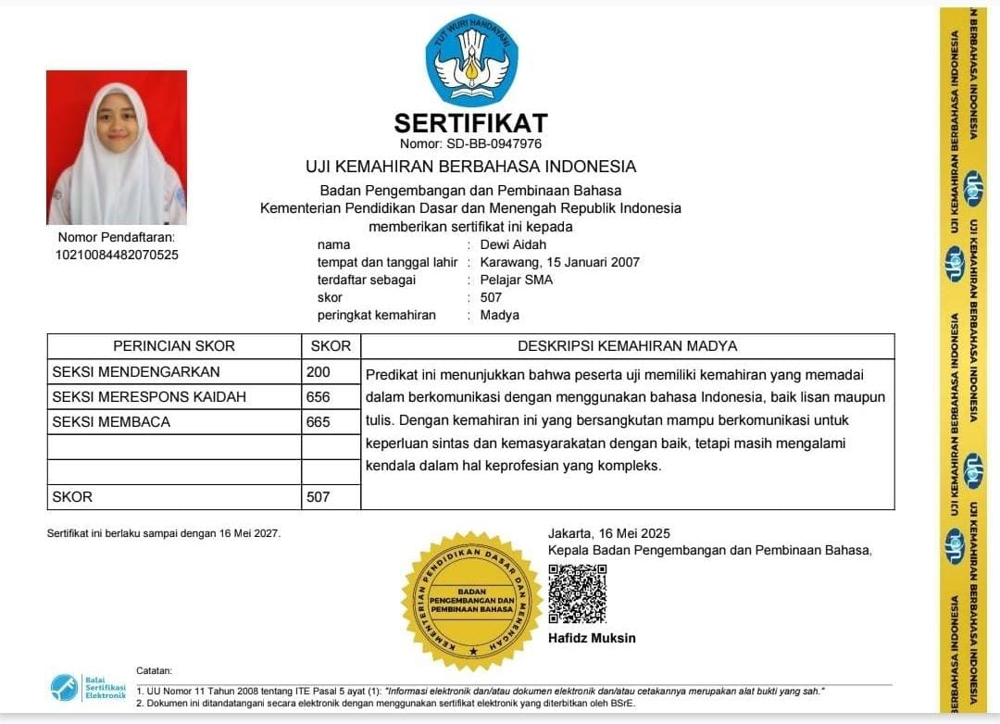
Badan Pengembangan dan Pembinaan Bahasa melalui Kelompok Kepakaran dan Layanan Profesional · Mei 2025
Sertifikasi resmi untuk mengukur kemampuan berbahasa Indonesia secara profesional.
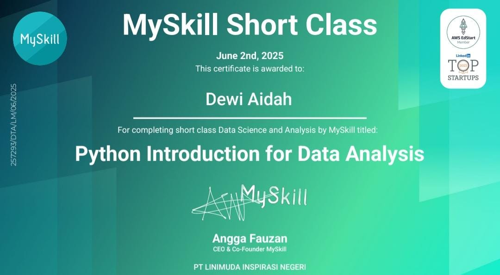
MySkill · Juni 2025
Sertifikasi untuk mengukur kemampuan dalam pengenalan Python untuk analisis data.
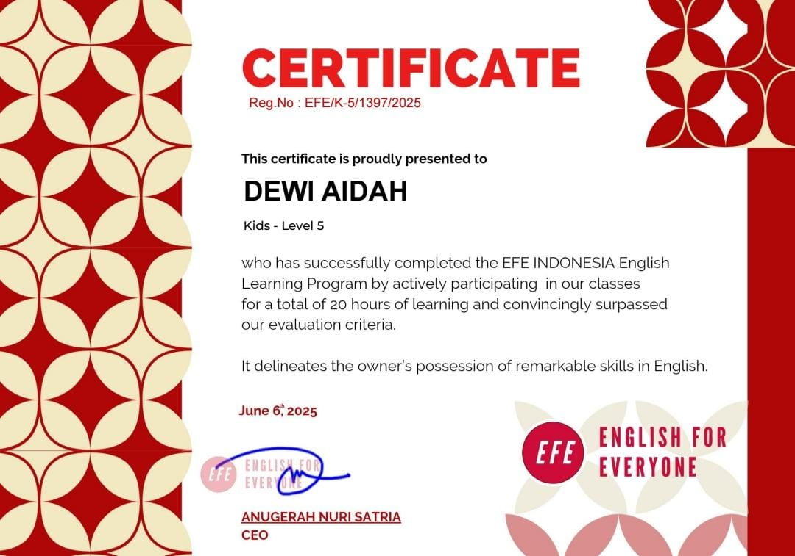
English For Everyone · 2025
Online Course untuk meningkatkan kemampuan bahasa Inggris tingkat menengah-atas.
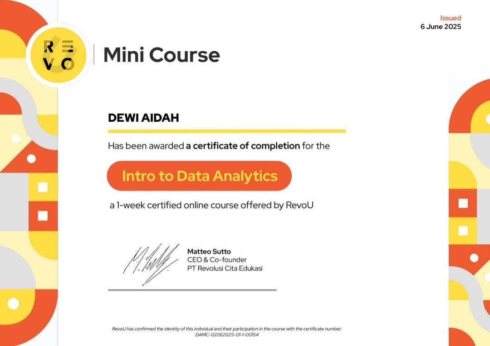
RevoU · 2025
Online Course untuk meningkatkan fundamental berkarir di Data Analytics
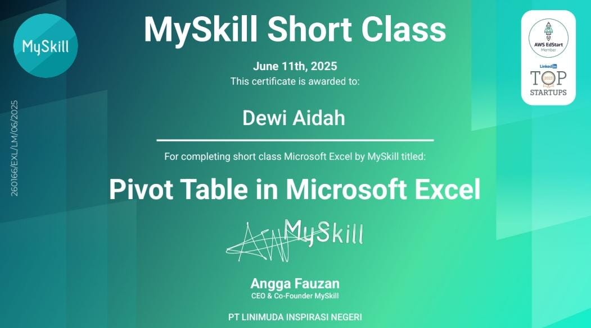
MySkill · Juni 2025
Pelatihan pengembangan website dan teknologi web.
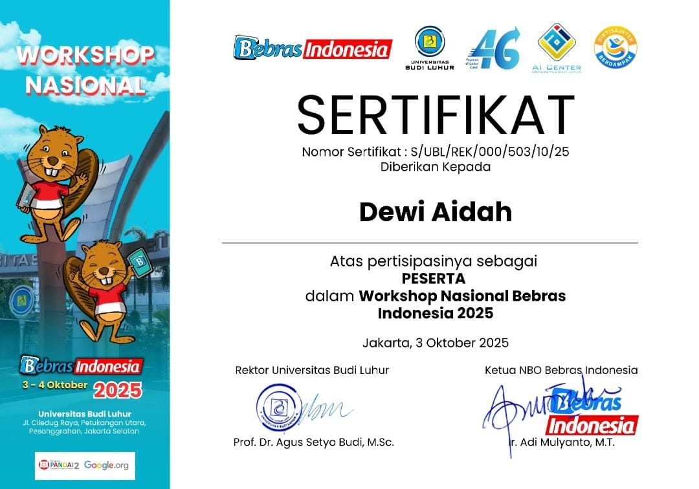
Nasional Bebras Indonesia · Oktober 2025
Forum kolaborasi pendidik se-Indonesia untuk meningkatkan literasi komputasi dan pemikiran komputasional di kalangan siswa.
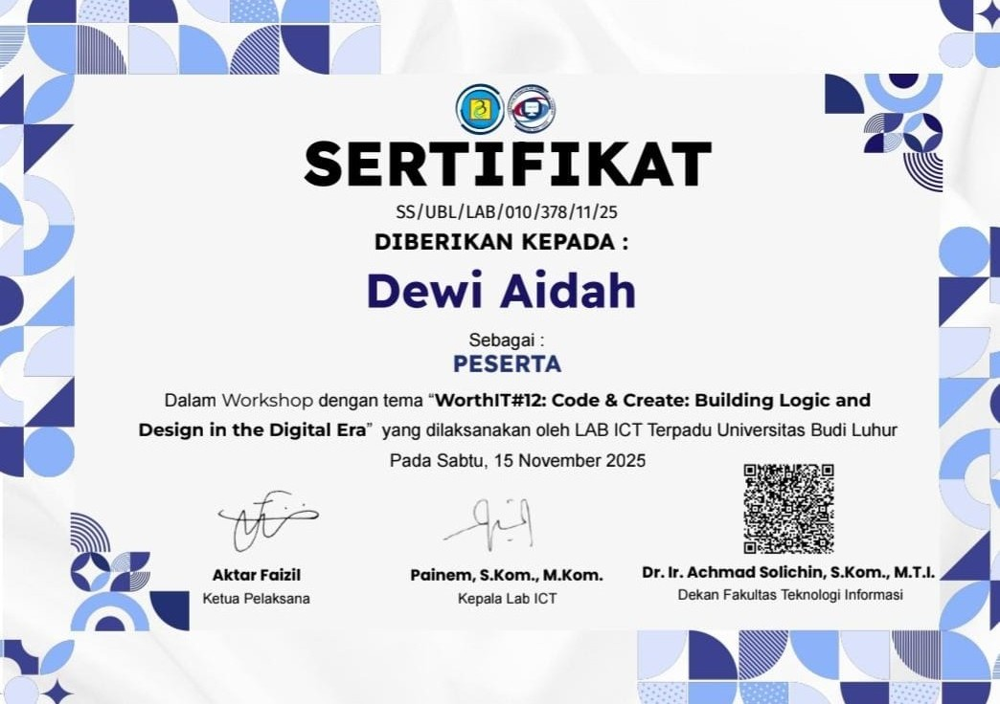
Laboratorium ICT · November 2025
Pelatihan Algoritma untuk meningkatkan kemampuan logika dan pemecahan masalah dalam pengembangan perangkat lunak.
KONTAK
Terbuka untuk bertukar ide, belajar bersama, dan berkolaborasi dalam proyek yang bermanfaat.